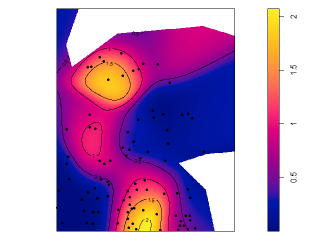

dbmss is an R package for simple computation of spatial statistic functions of distance to characterize the spatial structures of mapped objects, including classical ones (Ripley’s K and others) and more recent ones used by spatial economists (Duranton and Overman’s Kd, Marcon and Puech’s M). It relies on spatstat for some core calculation.
Installation
You can install the current release of the package from CRAN or the development version of dbmss from GitHub with:
# install.packages("pak")
pak::pak("EricMarcon/dbmss")Main functions
The main functions of the package are designed to calculate distance-based measures of spatial structure. Those are non-parametric statistics able to summarize and test the spatial distribution (concentration, dispersion) of points.
The classical, topographic functions such as Ripley’s K are provided by the spatstat package and supported by dbmss for convenience.
Relative functions are available in dbmss only. These are the and and functions.
The bivariate function can be calculated for Q. Rosea trees around V. Americana trees:
library(dbmss)
autoplot(
Mhat(
paracou16,
ReferenceType = "V. Americana",
NeighborType = "Q. Rosea"
),
main = ""
)
Confidence envelopes
Confidence envelopes of various null hypotheses can be calculated. The univariate distribution of Q. Rosea is tested against the null hypothesis of random location.
autoplot(
KdEnvelope(paracou16, ReferenceType = "Q. Rosea", Global = TRUE),
main = ""
)
Significant concentration is detected between about 10 and 20 meters.
Maps
Individual values of some distance-based measures can be computed and mapped.
# Calculate individual intertype M(distance) value
ReferenceType <- "V. Americana"
NeighborType <- "Q. Rosea"
fvind <- Mhat(
paracou16,
r = c(0, 30),
ReferenceType = ReferenceType,
NeighborType = NeighborType,
Individual = TRUE
)
# Plot the point pattern with values of M(30 meters)
p16_map <- Smooth(
paracou16,
fvind = fvind,
distance = 30,
# Resolution
Nbx = 512,
Nby = 512
)
par(mar = rep(0, 4))
plot(p16_map, main = "")
# Add the reference points to the plot
is.ReferenceType <- marks(paracou16)$PointType == ReferenceType
points(
x = paracou16$x[is.ReferenceType],
y = paracou16$y[is.ReferenceType],
pch = 20
)
# Add contour lines
contour(p16_map, nlevels = 5, add = TRUE)
Vignettes
A quick introduction is in vignette("dbmss").
A full documentation is available on the package website. It is a continuous update of the paper published in the Journal of Statistical Software (Marcon et al., 2015).